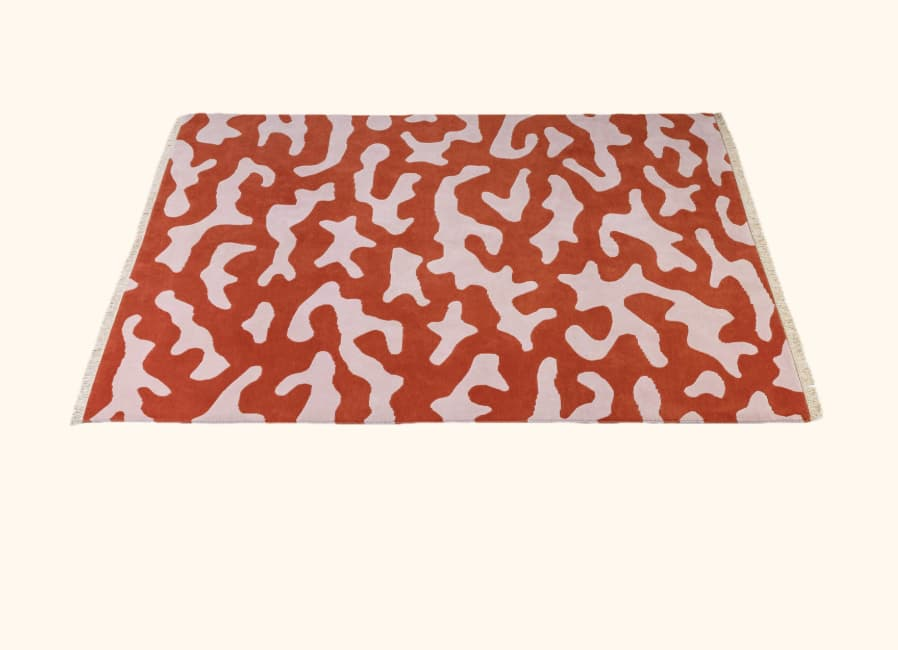

Esta pieza combina materiales naturales con objetos industriales, creando una composición que cuestiona el consumo contemporáneo. El trabajo de Gabriel Rico suele exhibirse en ferias como Zona MACO, donde el diseño se acerca más al arte conceptual que a la función.